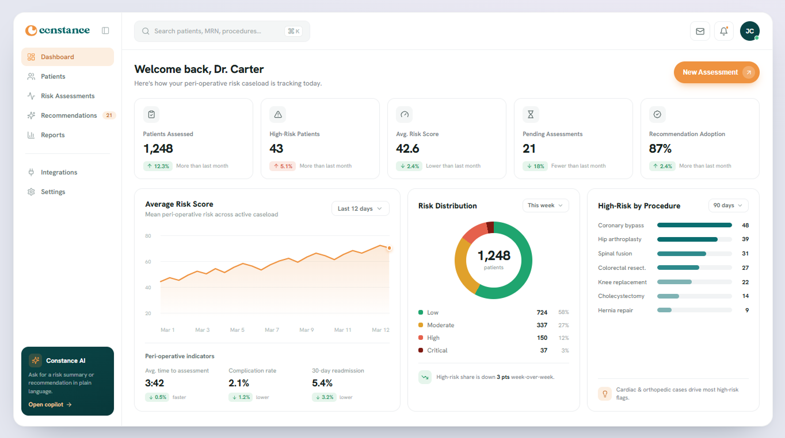
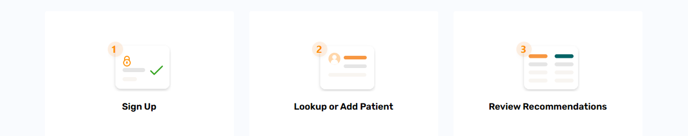
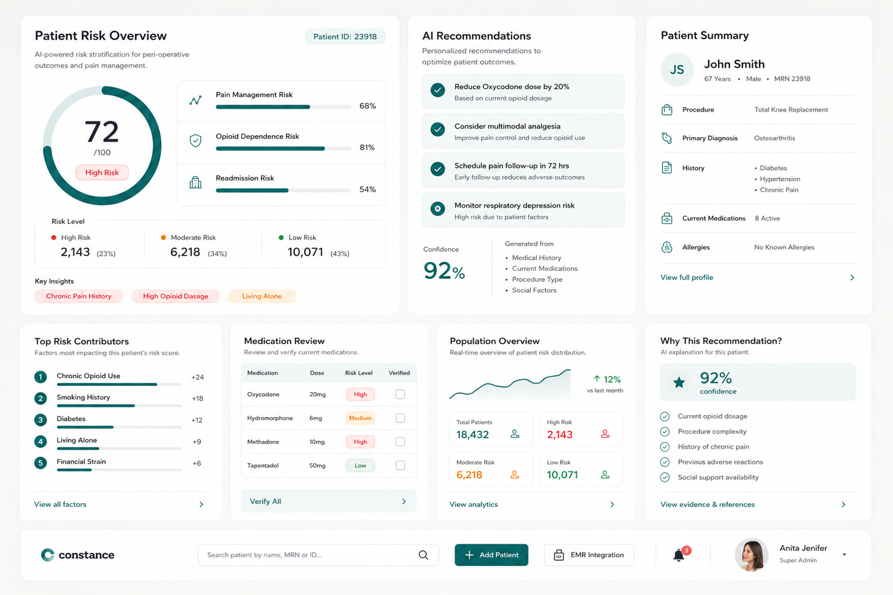
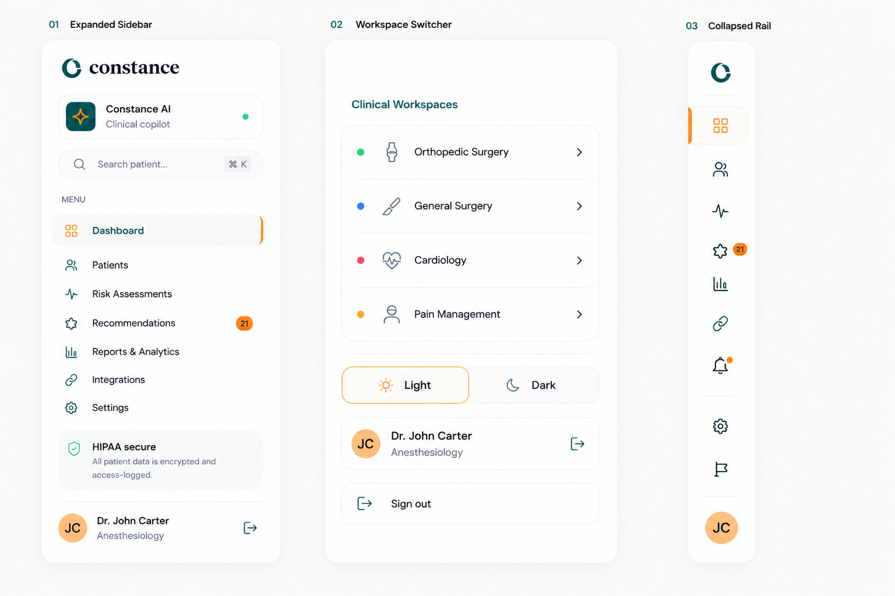

An AI-powered clinical decision support platform that analyzes patient risk, delivers explainable peri-operative insights, and guides evidence-based care decisions — helping clinicians improve outcomes with confidence.
Most AI products help people work faster. Constance helps clinicians make safer decisions.
This case study explores how I designed an AI-powered clinical decision support platform that transforms complex peri-operative risk models into clear, interpretable insights helping healthcare professionals assess surgical risk, identify complications early, and make more informed treatment decisions.


